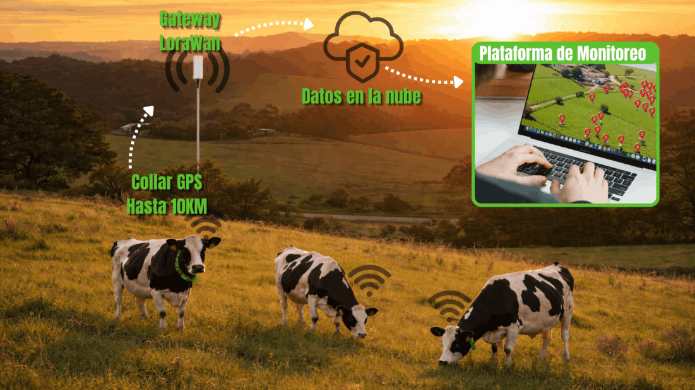
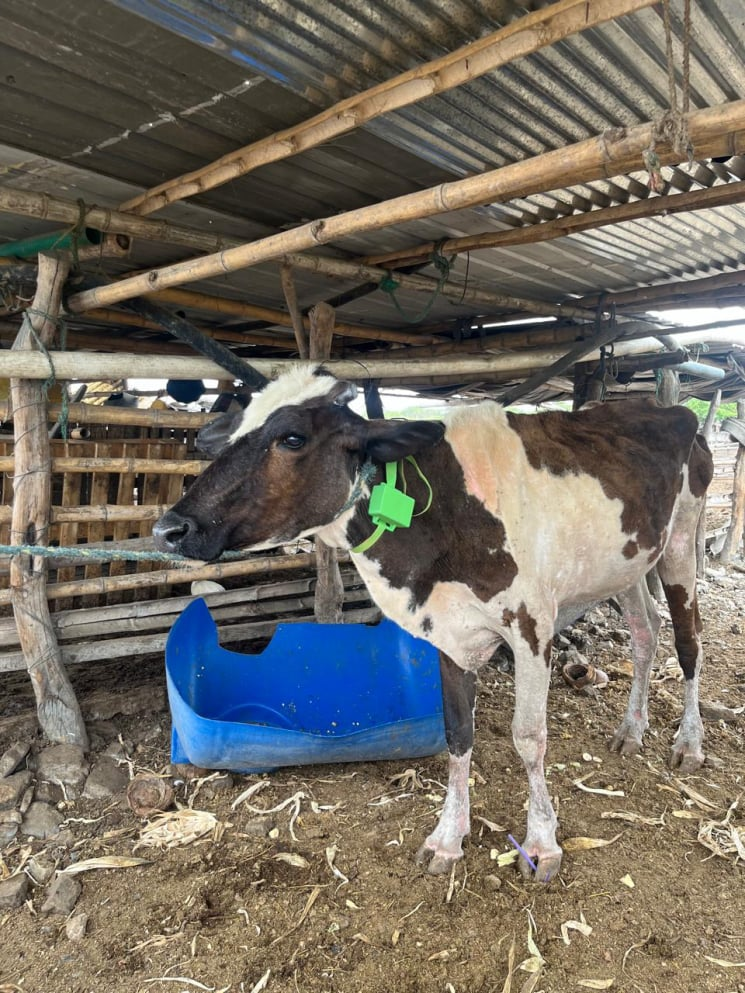
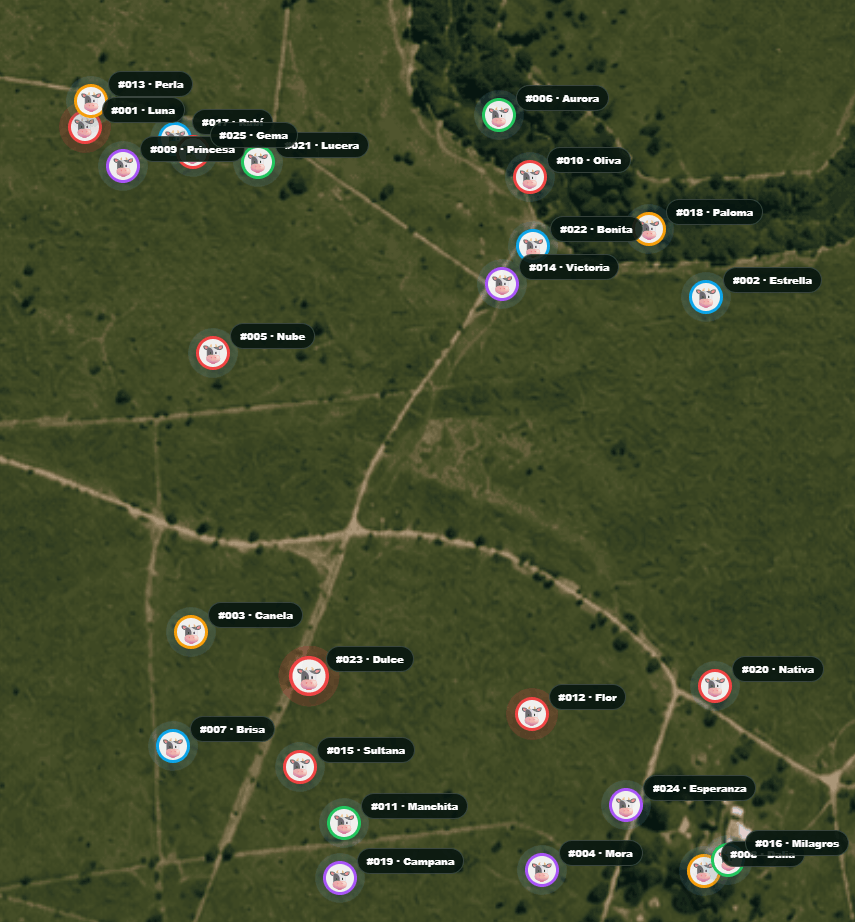
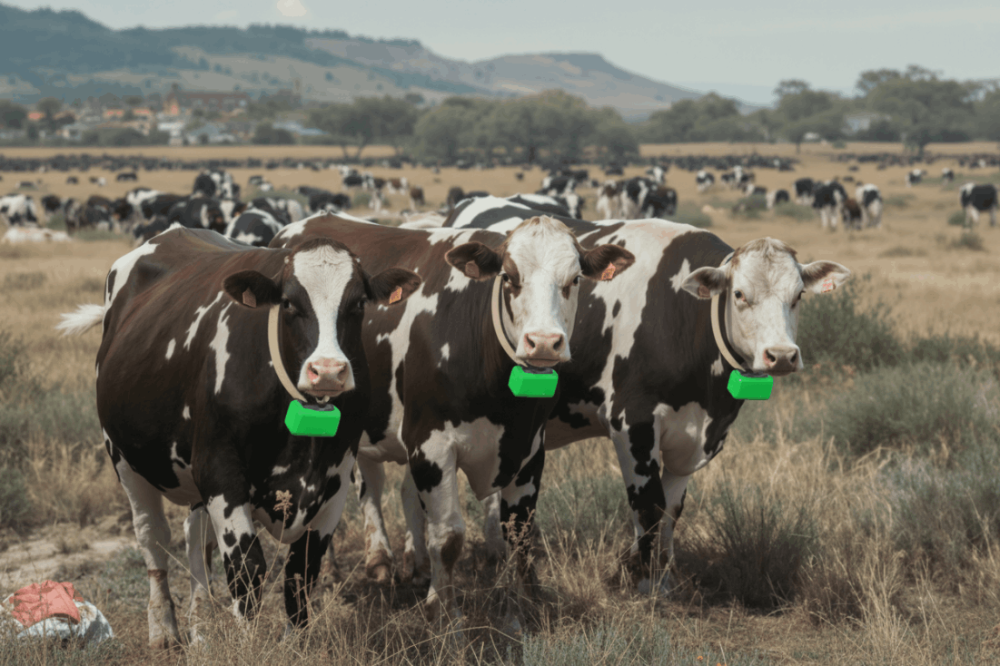
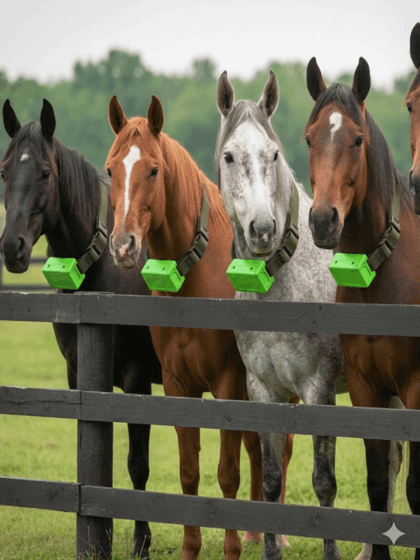
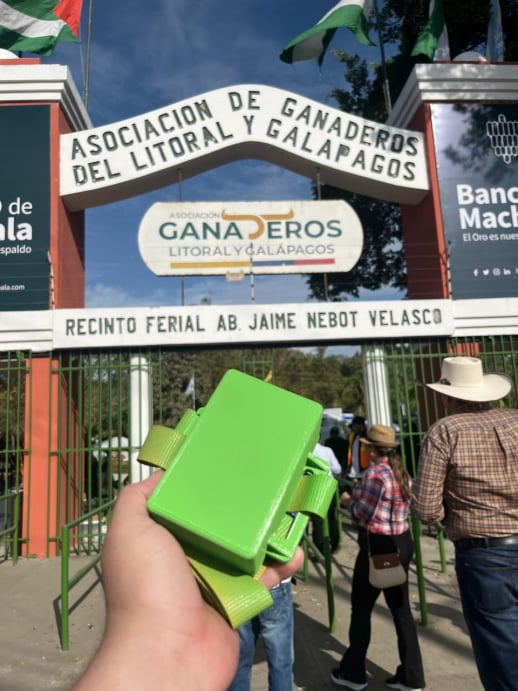
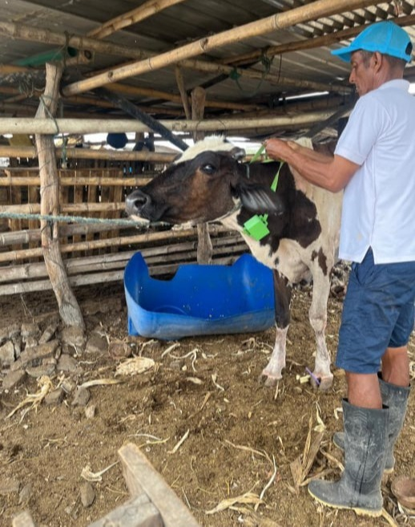
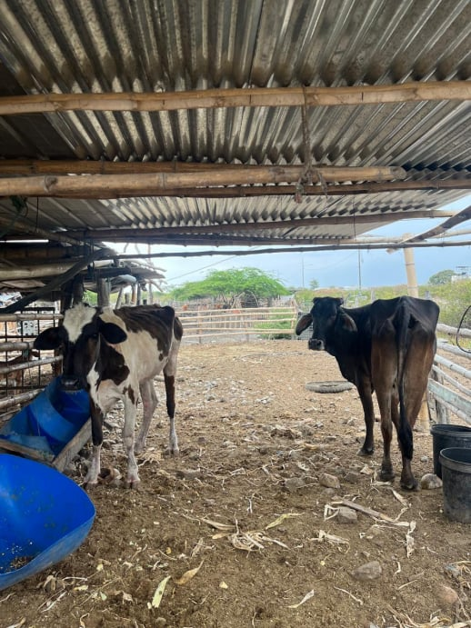

Solución diseñada y ensamblada en Ecuador para el control de animales en zonas rurales sin cobertura celular.
Nuestro sistema funciona mediante collares GPS inteligentes instalados en el ganado. Cada collar envía la ubicación y datos del animal a una antena central llamada Gateway LoRaWAN, la cual se encarga de recibir toda la información en campo.
El Gateway debe contar con conexión a internet, ya sea mediante red doméstica o internet satelital como Starlink. Una vez conectado, la información es enviada automáticamente a la plataforma de monitoreo, donde el cliente puede visualizar en tiempo real la ubicación y movimiento del ganado desde cualquier lugar.



Un collar de monitoreo avanzado para ganado que combina tecnología GPS, LoRaWAN y sensores multi-eje para proporcionar datos detallados sobre la ubicación, el comportamiento y la salud de los animales. Cuenta con una batería de larga duración y está diseñado para una gestión ganadera eficiente y proactiva
Ideal para pequeñas operaciones ganaderas que ya cuentan con energía eléctrica e internet en finca. Permite monitoreo GPS básico del ganado mediante red LoRaWAN.
Diseñado para haciendas medianas que requieren mayor cobertura y control de trazabilidad del ganado en tiempo real usando infraestructura existente.
Solución autónoma para zonas remotas sin energía eléctrica. Incluye sistema solar completo para operación continua del monitoreo GPS.
Ideal para operaciones ganaderas medianas en campo abierto. Sistema totalmente autónomo con energía solar y conectividad LoRaWAN de largo alcance.
Plan avanzado para grandes haciendas ganaderas. Permite monitoreo simultáneo de múltiples animales con infraestructura solar industrial y cobertura extendida.
Diseñado para grandes operaciones ganaderas y proyectos de trazabilidad a gran escala. Permite monitorear más de 500 animales en tiempo real mediante una infraestructura LoRaWAN y solar preparada para expansión futura.



